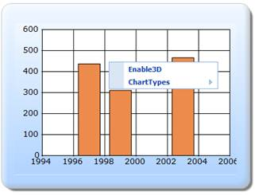

The steps to customize the ContextMenu through ChartModel are as follows:
Step 1:
View:
Add the code displayed below in the aspx file.
View [ASPX]
<%--Rendering the Chart Control--%>
<%= Html.Chart("ChartModel",(MVCChartModel)ViewData["ChartModel"]) %>
View [cshtml]
@*--Rendering the Chart Control--*@
@(new HtmlString(Html.Chart("ChartModel",(MVCChartModel)ViewData["ChartModel"]).ToString()))
Step 2:
Controller:
In the InitializeChart function, the chart is rendered. By setting the ShowContextMenu property to true, the context menu can be enabled. The specified context menu items can be added by using the ContextMenuItems list.
public ActionResult Index()
{
MVCChartModel chartModel = new MVCChartModel();
//Rendering the chart
InitializeChart (chartModel);
ViewData["ChartModel"] = chartModel;
return View();
}
[AcceptVerbs(HttpVerbs.Post)]
public ActionResult Index(MVCChartModel chartModel, ChartParams param)
{
//Rendering the chart
InitializeChart (chartModel);
ViewData["ChartModel"] = chartModel;
//calling the ChartActionResult method to get the updated chart
return chartModel.ChartActionResult(param);
}
//Rendering the chart
protected void InitializeChart (MVCChartModel chartModel)
{
//Enabling the context menu
chartModel.ShowContextMenu = true;
//Adding particular context menu items
chartModel.ContextMenuItems.Add(ContextMenuItem.Enable3D);
chartModel.ContextMenuItems.Add(ContextMenuItem.ChartTypes);
//Creating Chart series
ChartSeries series;
series = new ChartSeries("Saab", ChartSeriesType.Column);
series.Text = series.Name;
series.Points.Add(1997, 437);
series.Points.Add(1999, 311);
series.Points.Add(2003, 466);
chartModel.Series.Add(series);
chartModel.BorderAppearance.SkinStyle = ChartBorderSkinStyle.Emboss;
chartModel.Skins = ChartModelSkins.Office2007Blue;
}
Step 3:
Run the code, to get the following output.

Figure 327: Customized ContextMenu
 Note: If you add the contextmenu items by using
the ContextMenuItems list collection, then it will override the default context
menu items.
Note: If you add the contextmenu items by using
the ContextMenuItems list collection, then it will override the default context
menu items.